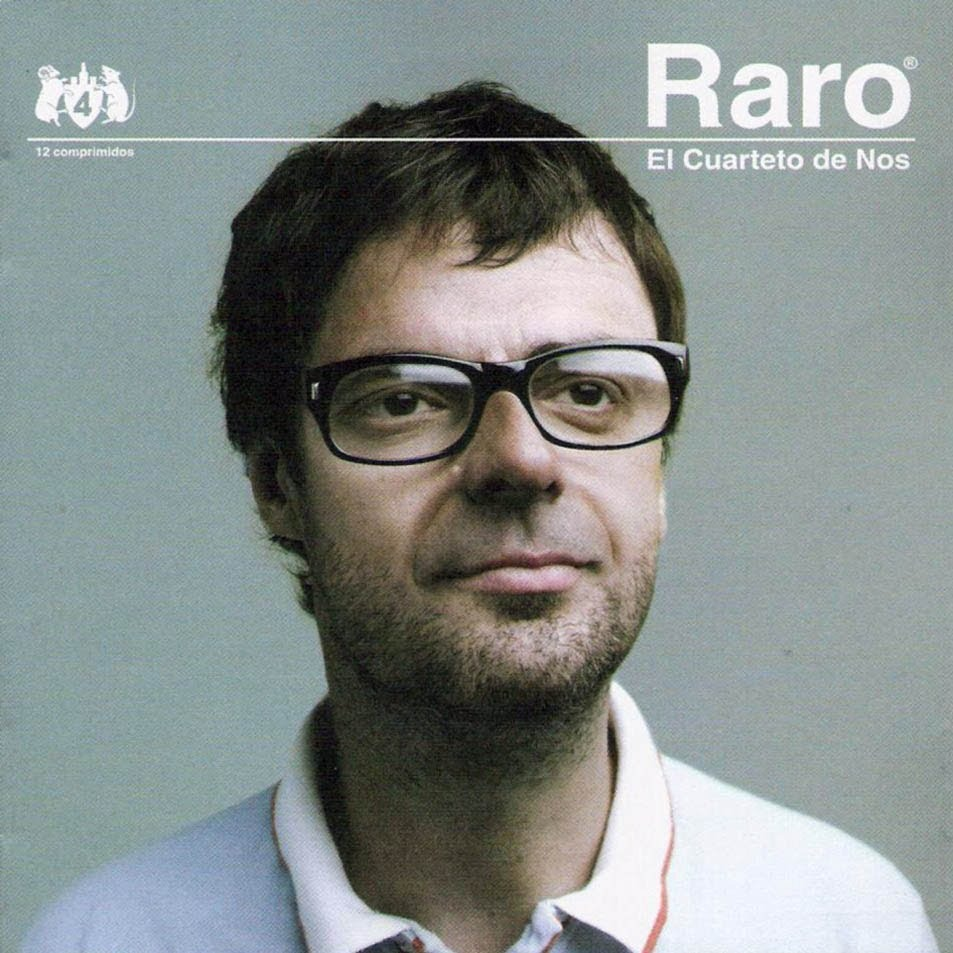
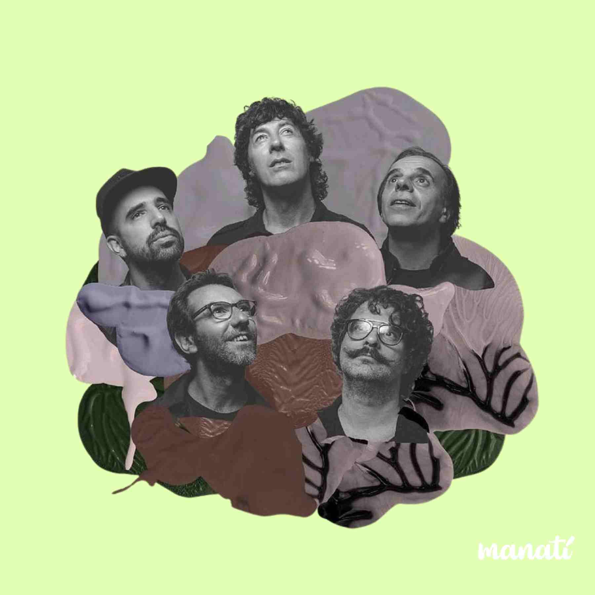

Selecciona una canción
igual que un ángel
snowman
 World's Smallest Violin
World's Smallest Violin
over the Rainbow
 Lo malo de ser bueno
Lo malo de ser bueno

Hoy Estoy Raro

Ya no sé qué hacer conmigo
Enamorado tuyo
25:00
Trabajando
Bloc de Notas
Tareas: 0